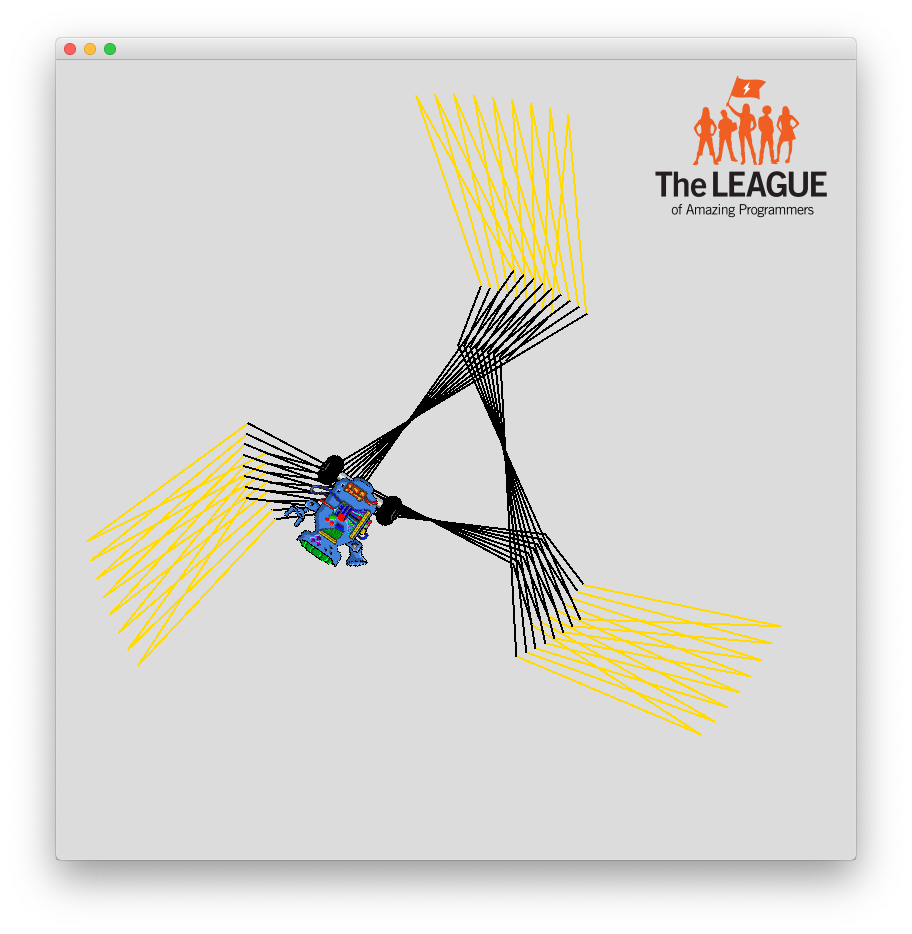
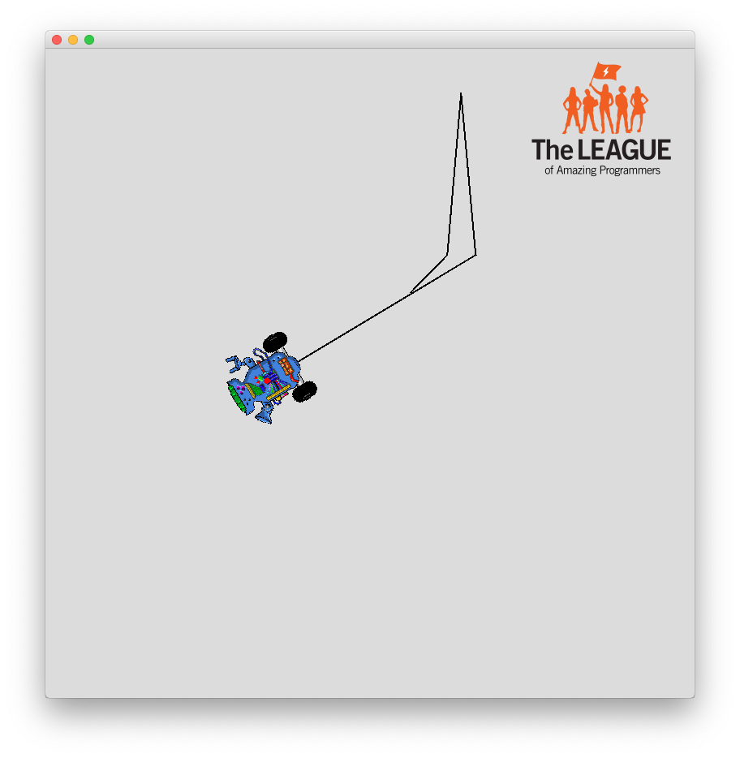
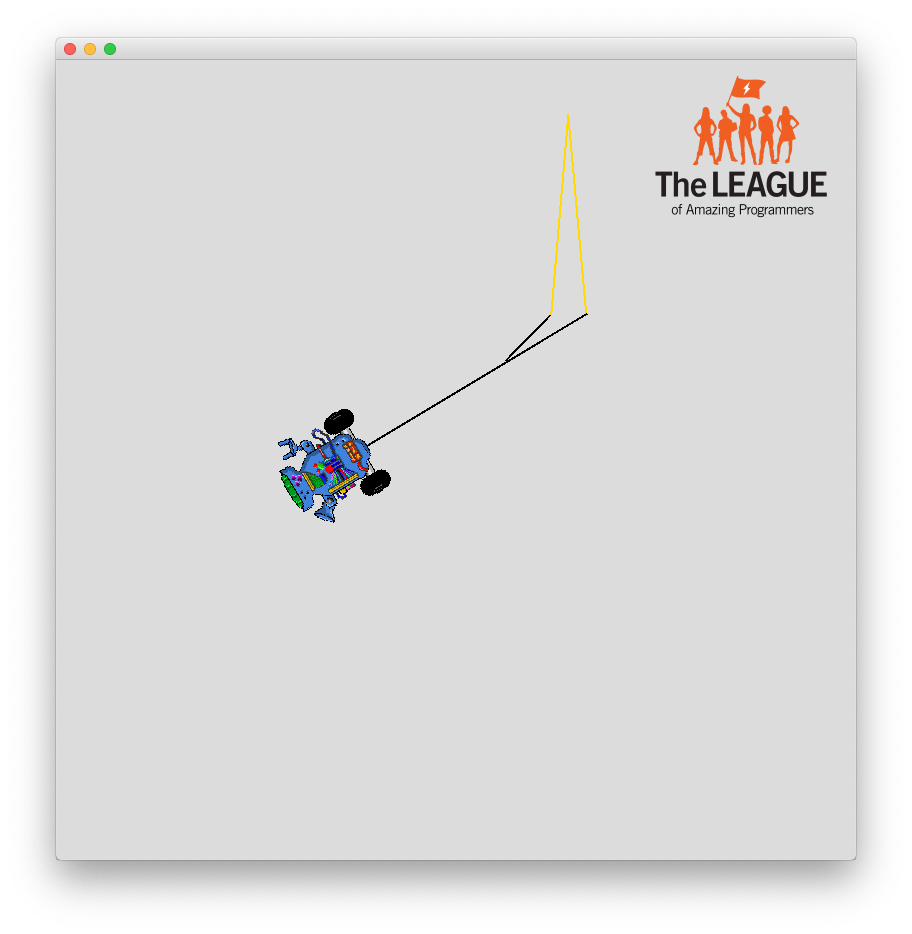

Flaming Ninja Star

Goal:
Use int variables in a loop to draw a flaming ninja star.
Steps:
- Find the Flaming Ninja Star recipe program ( FlamingNinjaStar.java ) and open it using Eclipse.
- Follow the instructions in the program to draw the star.
- The first time you run the program, it should look like this
- After you add the color, it should look like this
- Using a loop to repeat the pattern, the flaming star will be complete.